Warning: Missing `trust` will be set to FALSE by default for RDS in 2.0.0.Data visualization: Basic plotting
Recall: Grammar of ggplot2
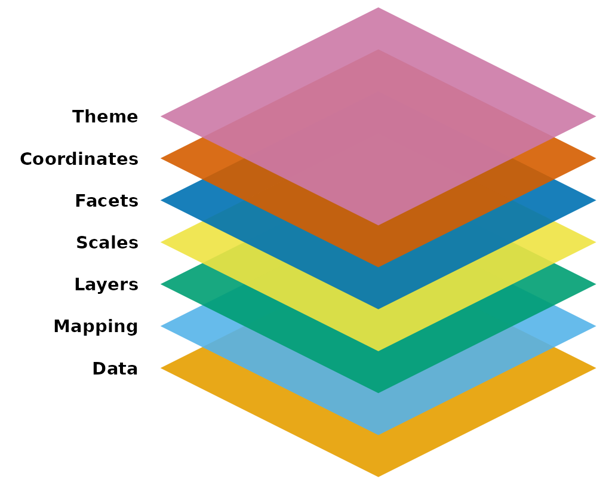
- We typically start at the bottom (data) and work our way up (themes)
- You skip some of the layers if you don’t need them
ggplot2needs at least the following three to produce a chart:- data, a mapping, and a layer
- For the most part, there are default settings for the other parts:
- scales, facets, coordinates, and themes
Recall: common components of ggplot2
- Common components of
ggplot2include:ggplot(): the main function to create a plotaes(): the function to specify the mapping of variables to axesgeom_*()orstat_*(): functions to add layers to the plotlabs(): the function to change labels of axes and titletheme(): the function to adjust non-data plot elements such as text size,
ggplot(
data = my_data,
mapping = aes(x = col1, y = col2)
) +
geom_*() +
labs() +
theme() In this lesson, we will focus on using different geometric objects and building the mapping.
Geometric objects
- Geometric objects (
geom’s) are used to represent the datapoints (aka observations)- The same variable’s data can be represented in different ways
For example: we can plot Age vs. Income using a scatterplot or a smoothed line
Scatterplot of Age vs. Income
ggplot(
hrs_data,
mapping = aes(
x = age_yr,
y = income
)
) +
geom_point() +
ylim(0, 2000000)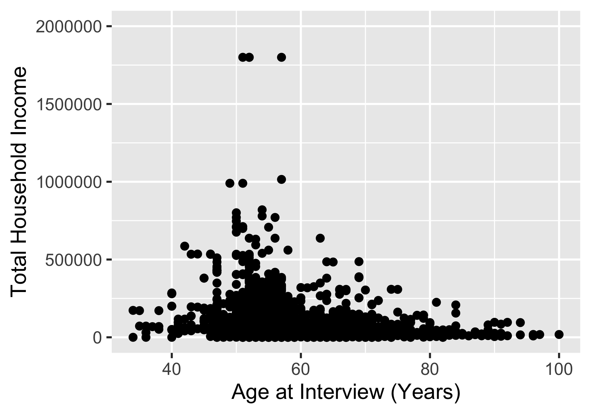
Line plot of Age vs. Income
ggplot(
hrs_data,
mapping = aes(
x = age_yr,
y = income
)
) +
geom_smooth() +
ylim(0, 2000000)`geom_smooth()` using method = 'gam' and formula = 'y ~ s(x, bs = "cs")'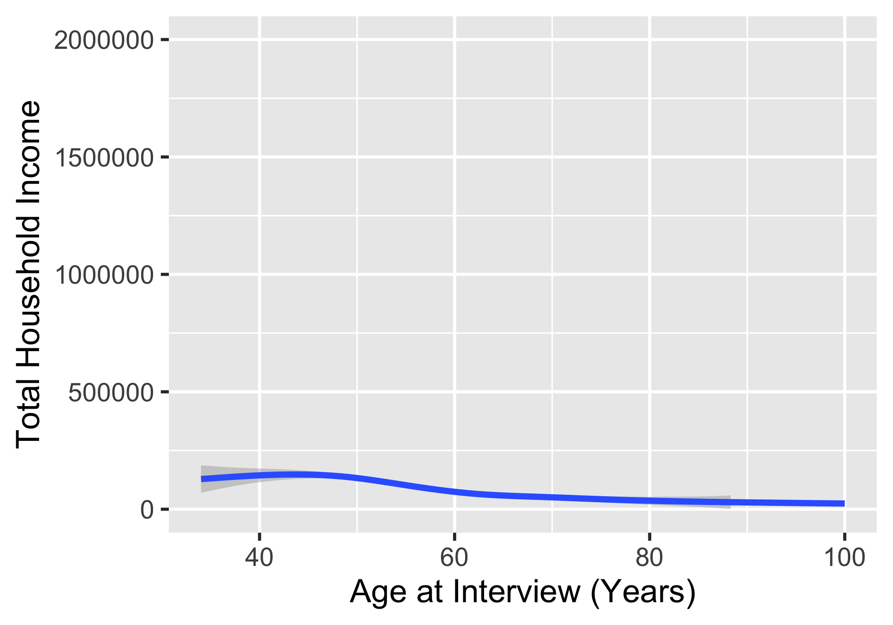
Types of geoms
- Check out
ggplot2cheatsheet for a list of commongeom_*()functions
Common geom_*() for plots with one variable:
geom_histogram()(for numeric)geom_bar()(for categorical)geom_boxplot()geom_density()geom_dotplot()
Common geom_*() for plots with two or more variables:
geom_point()geom_line()geom_boxplot()geom_smooth()geom_jitter()
Example 1: One continuous variable (1/2)
ggplot(hrs_00) +
geom_histogram(aes(x = age_yr))- 1
-
The
geom_histogram()function is used to create a histogram of theage_yrvariable.
`stat_bin()` using `bins = 30`. Pick better value `binwidth`.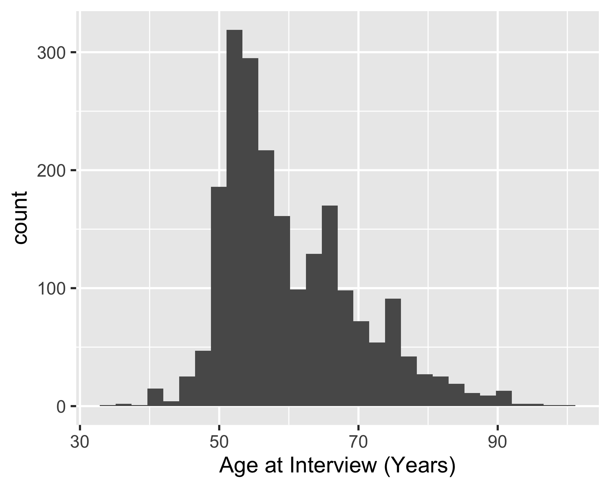
ggplot(hrs_00) +
geom_density(aes(x = age_yr))- 2
-
The
geom_density()function is used to create a density plot of theage_yrvariable.
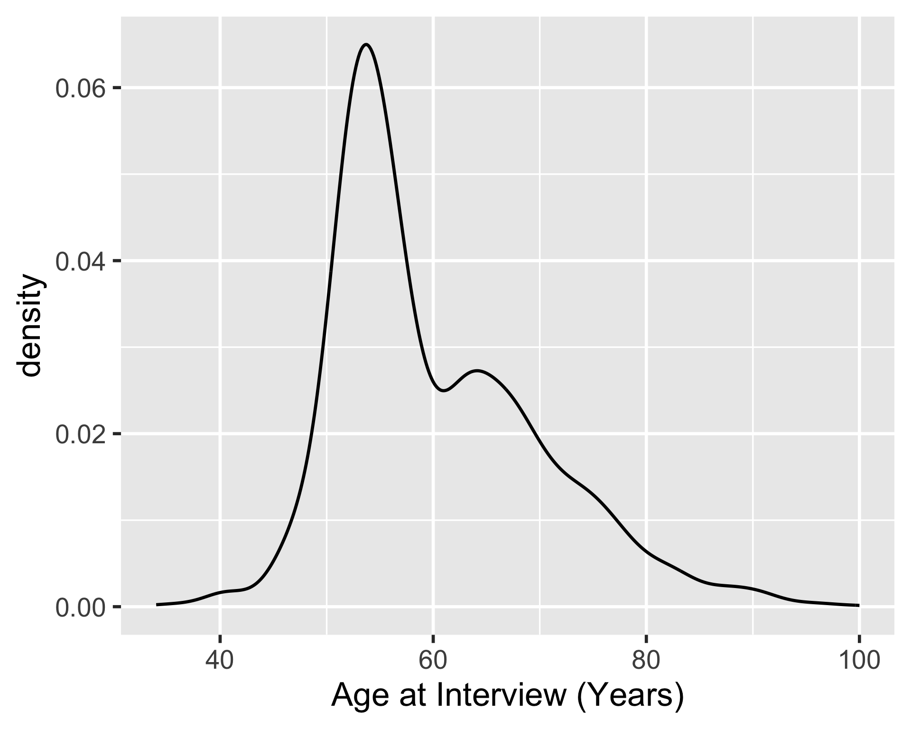
Example 1: One continuous variable (2/2)
ggplot(hrs_00) +
geom_boxplot(aes(x = age_yr))- 3
-
The
geom_boxplot()function is used to create a boxplot of theage_yrvariable.
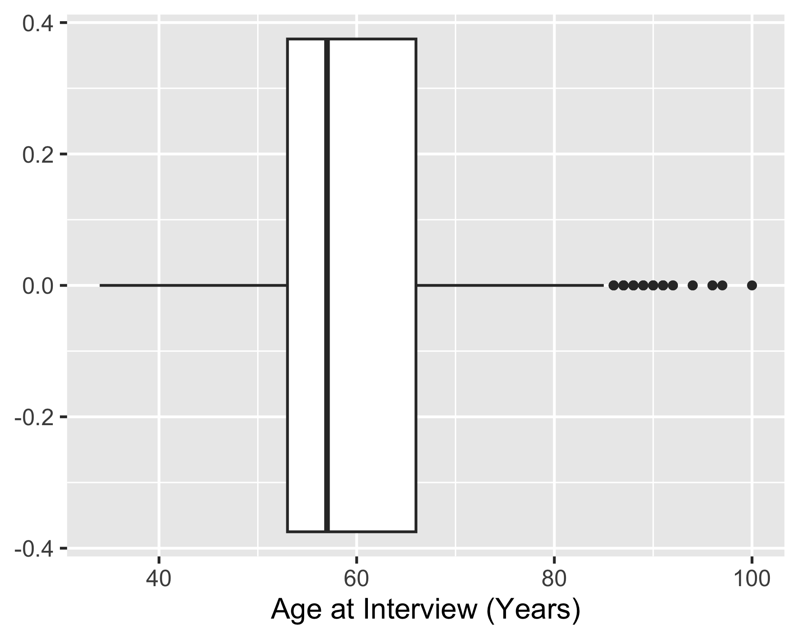
ggplot(hrs_00) +
geom_dotplot(aes(x = age_yr))- 4
-
The
geom_dotplot()function is used to create a dot plot of theage_yrvariable.
Bin width defaults to 1/30 of the range of the data. Pick better value with
`binwidth`.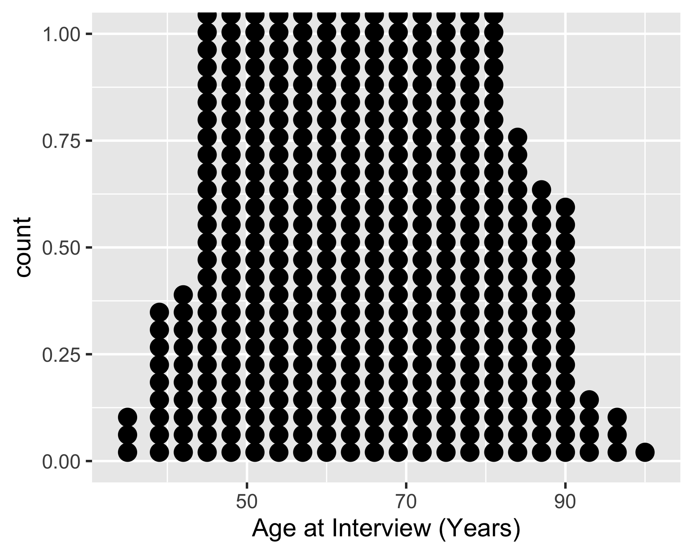
Example 2: One continuous, one categorical variable (1/2)
ggplot(hrs_00) +
geom_boxplot(
aes(x = age_yr, y = srh)
)- 1
-
The
geom_boxplot()function is used to create a boxplot of theage_yrvariable (on the x-axis), grouped by thesrhvariable (on the y-axis).
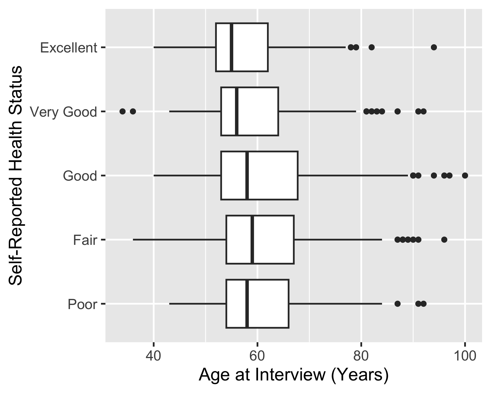
ggplot(hrs_00) +
geom_jitter(
aes(x = age_yr, y = srh)
)- 2
-
The
geom_jitter()function is used to create a scatterplot of theage_yrvariable (on the x-axis), grouped by thesrhvariable (on the y-axis). The points are jittered (spaced apart) to avoid overplotting.
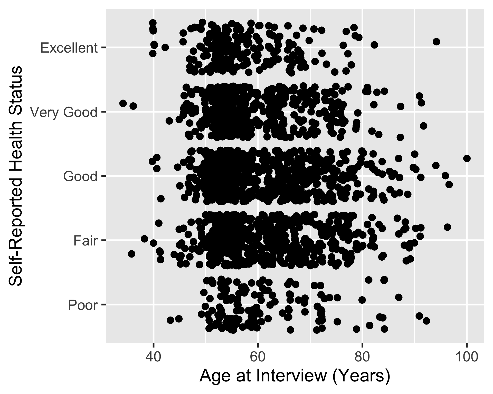
Example 2: One continuous, one categorical variable (1/2)
pacman::p_load(ggridges)
ggplot(hrs_00) +
geom_density_ridges(
aes(x = age_yr, y = srh)
)- 1
-
The
ggridgespackage is needed for thegeom_density_ridges()function. - 2
-
We can use
geom_density_ridges()to create a density plots of theage_yrvariable (on the x-axis), grouped by thesrhvariable (on the y-axis). The density plots are stacked on top of each other to create a ridge plot.
Picking joint bandwidth of 2.46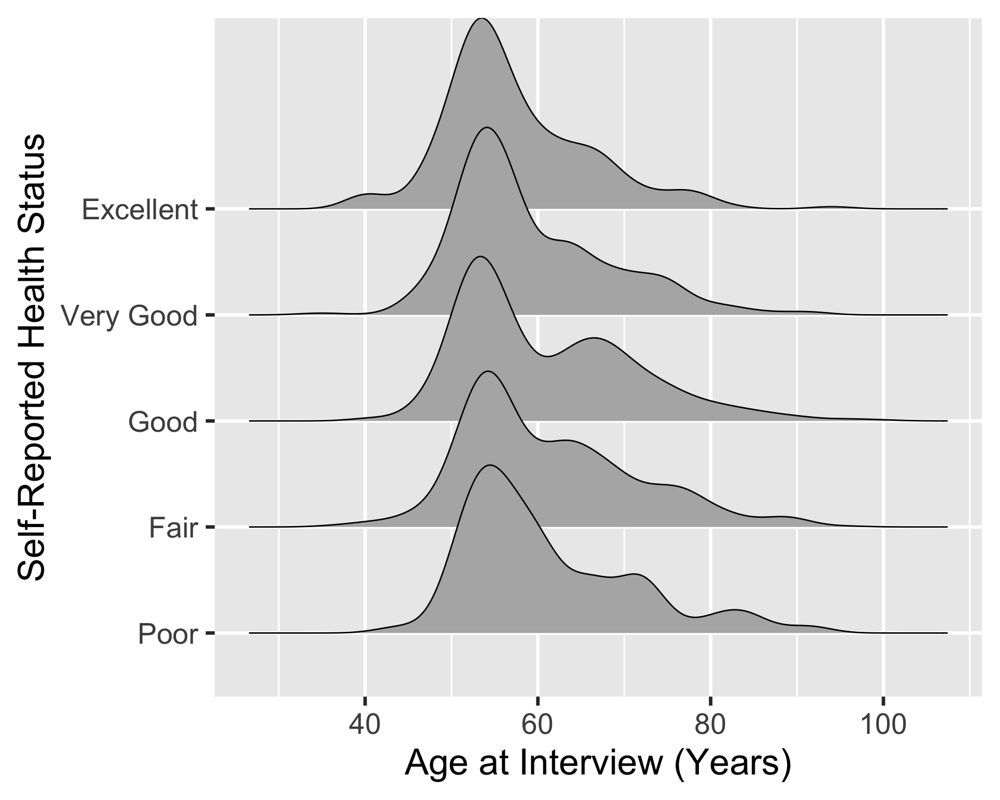
ggplot(
hrs_00,
aes(x = age_yr, y = srh)
) +
geom_boxplot() +
geom_jitter(alpha = 0.2)- 3
-
We can move
aes()intoggplot()since bothgeom_boxplot()andgeom_jitter()use the same mapping - 4
- We can add a boxplot
- 5
-
Then we can stack a jitter plot on top of the boxplot to show the individual data points. The
alphaargument is used to make the points more transparent.
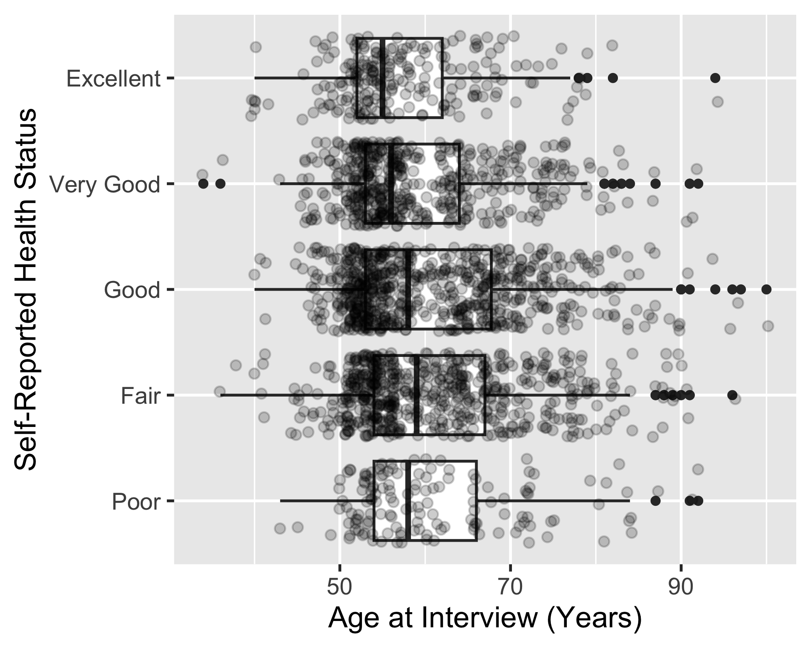
Aesthetic mapping/setting
- If we want to change the visual properties of the plotted data, we use aesthetic mapping/setting
- This is not about the design choices of the figure, but the aesthetics of the data representation
- Here are a list of common aesthetic options (from the Epi Handbook):
x= The x-axis variabley= The y-axis variableshape= Display a point with geom_point() as a dot, star, triangle, or square…fill= The interior color (e.g. of a bar or boxplot)color= The exterior line of a bar, boxplot, etc., or the point color if using geom_point()size= Size (e.g. line thickness, point size)alpha= Transparency (1 = opaque, 0 = invisible)binwidth= Width of histogram bins (forgeom_histogram()only)width= Width of bar plot columns (forgeom_bar()only)linetype= Line type (e.g. solid, dashed, dotted)
Example 3: Scatterplot of age vs. self-reported health
Original scatterplot of age vs. self-reported health
ggplot(
hrs_00,
aes(x = age_yr, y = srh)
) +
geom_jitter()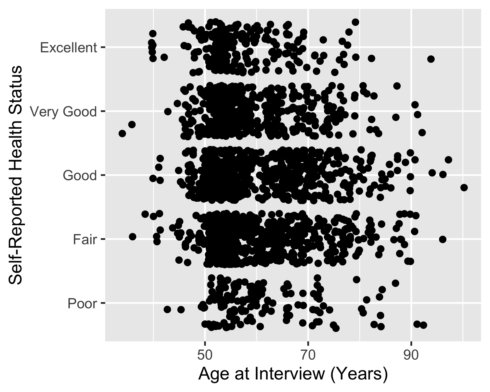
Scatterplot with changed data aesthetics
ggplot(
hrs_00,
aes(x = age_yr, y = srh)
) +
geom_jitter(
color = "darkgreen",
size = 0.5,
alpha = 0.2
)- 1
- We changed the color of the points to dark green
- 2
- We changed the size of the points to 0.5 (smaller than the default size of 1)
- 3
- We changed the transparency of the points to 0.2 (more transparent than the default alpha of 1)
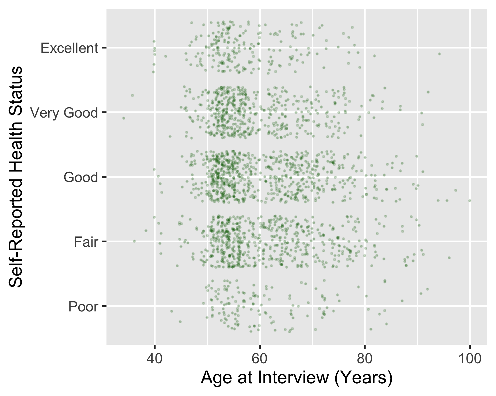
Example 4: Barplot of self-rated health
ggplot(
hrs_00,
aes(x = srh)
) +
geom_bar(
color = "black",
fill = "lightblue",
width = 0.5
)- 1
- We changed the color of the bars to black (color is the outline of the bars)
- 2
- We changed the fill color of the bars to light blue
- 3
-
We changed the width of the bars to 0.5 (we would use
binwidthforgeom_histogram())
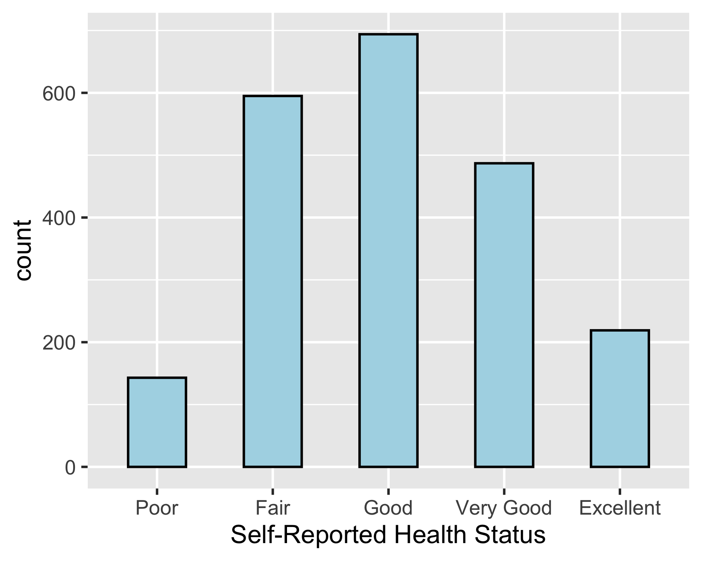
BIG WARNING!
Color is often NOT needed in a plot!!
- In general, when you add color, you should adding information to the plot, not just for aesthetics
- And that color should not be conveyed by existing text
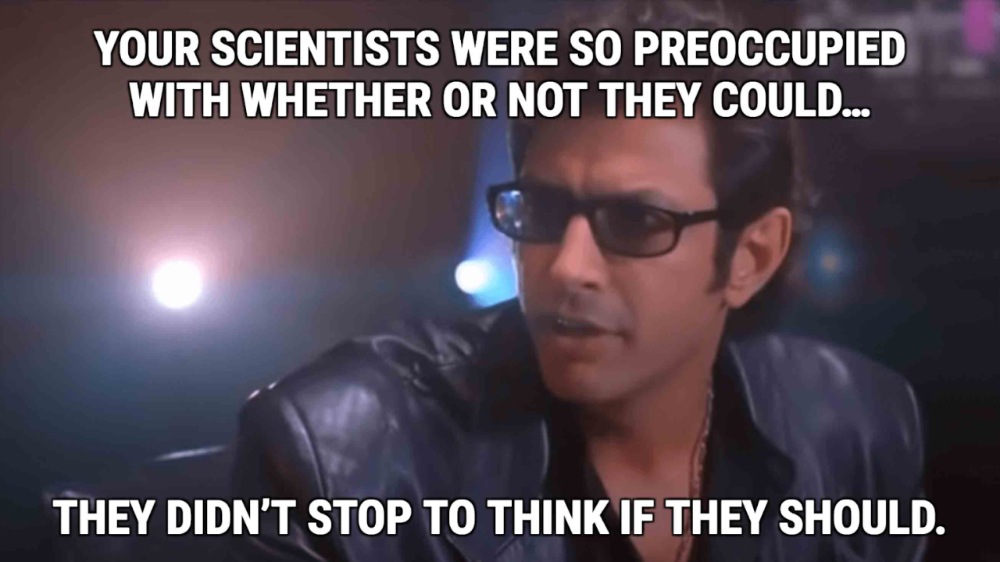
Two ways of setting aesthetics
Outside aes() (aesthetic setting)
- This is what we’ve been doing so far
- We set the aesthetics of the data to a specific value
- Like
darkgreenor0.5
- Like
- These settings are not based on the data
For example:
ggplot(
hrs_00,
aes(x = age_yr, y = srh)
) +
geom_jitter(color = "darkgreen")- 1
-
darkgreenis a specific value withingeom_jitter()but not inaes()
Inside aes() (aesthetic mapping)
- We can also set the aesthetics of the data based on the data itself
- Let’s say we want the type of dots to be based on the self-reported health variable
- We can do this by putting the
shapeaesthetic insideaes()
- We can do this by putting the
For example:
ggplot(
hrs_00,
aes(x = age_yr, y = srh, color = srh)
) +
geom_jitter()- 2
-
Now we put
color = srhinsideaes()so that the color of the dots is based on the self-reported health variable
Example outside and inside aes()
ggplot(
hrs_00,
aes(x = age_yr, y = srh)
) +
geom_jitter(color = "darkgreen")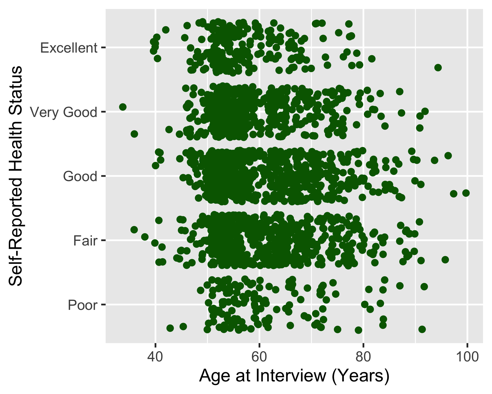
ggplot(
hrs_00,
aes(x = age_yr, y = srh, color = srh)
) +
geom_jitter()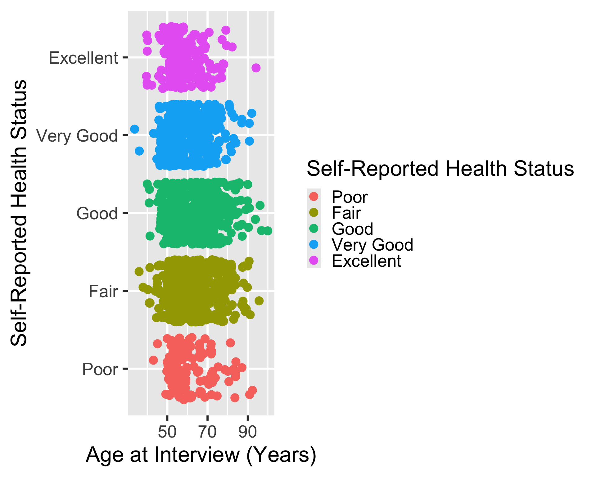
Better example of fill/color
- Color is good when it adds information to the plot
- This is helpful when we want to compare the distribution of different categories
- For example: distribution of age in our dataset between males and females
ggplot(
hrs_00,
aes(
x = age_yr,
fill = sex
)
) +
geom_histogram()`stat_bin()` using `bins = 30`. Pick better value `binwidth`.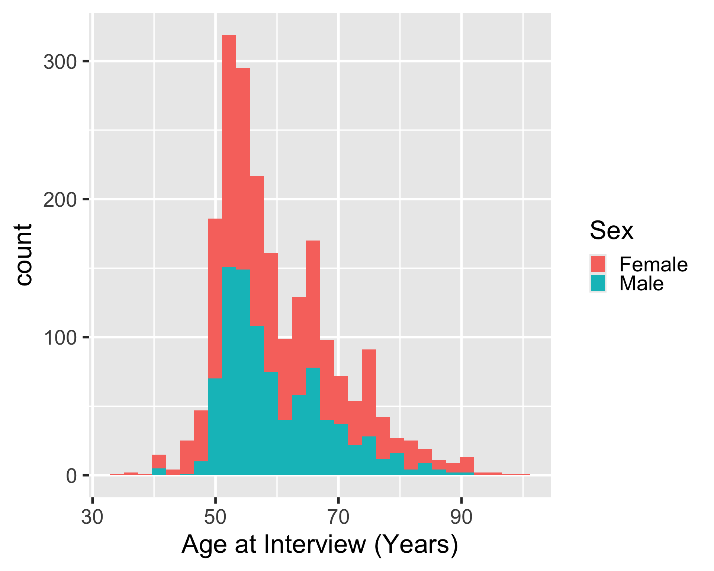
Wrap-up
- We can use different geometric objects to represent data in different ways
- Some geometric objects only work for certain types of data than others
- We can set aesthetics of datapoints in
ggplot2- Including color, fill, size, transparency, shape, and more
- Color should add information to our plots!